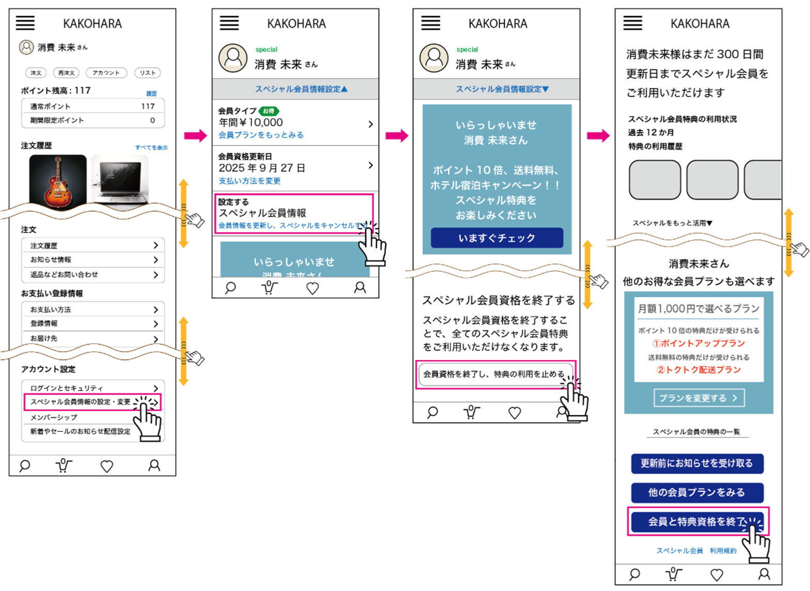

ダークパターン事例⑨ キャンセル困難
資料での説明
商品等の購入や会員登録等、事業者への申込みの手続の難易度と、解約・退会の難易度が釣り合わないもの
【例】
- Ⓐ解約をしようとすると解約のデメリットを表示させ、消費者を引き留めようとする。
- Ⓑ解約前に他のプラン等の選択肢を紹介し、消費者を引き留めようとする。
- Ⓒ多数の画面を遷移したり、何度もスクロールをしたりしないと最終的な解約ボタンまで行きつかず、手順が煩雑である。

example-video.jp/account/cancel
会員特典を失います
保存した作品、会員価格、ポイントが利用できなくなります。
お得な休会プランはいかがですか？
月額を半額にして3か月継続できます。
解約理由を教えてください
最終確認
example-video.jp/account
契約の管理
スタンダードプラン 月額1,200円
次回更新日: 2026年11月30日
解約しますか？
11月30日までは利用できます。追加料金はありません。
解説
申込みより解約だけが著しく長く、途中でデメリットや別プランを繰り返し提示する設計は、利用者の意思決定を妨げます。
改善例では契約情報の近くに解約入口を置き、確認は必要事項を示す1回にします。解約後の利用期限・請求・再開方法も結果として明示します。